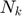
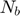
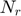
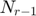
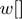

Cipher
Parameters:
- in - Input
- K - Cipher key in integer array format
-  - Number of 32-bit words comprising the Cipher Key. For this standard, = 4, 6, or 8
-  - Number of columns (32-bit words) comprising the State. For this standard, = 4
-  = Number of rounds, which is a function of and (which is fixed). For this standard, = 10, 12, or 14
Process:
At the start of the Cipher, the input is copied to the State array. After an initial Round Key addition, the State array is transformed by implementing a round function 10, 12, or 14 times (depending on the key length), with the final round differing slightly from the first  rounds. The final State is then copied to the output.
The round function is parameterized using a key schedule that consists of a one-dimensional array of four-byte words derived using the Key Expansion routine.
The array  contains the key schedule.
All rounds are identical with the exception of the final round, which does not include the MixColumns() transformation
function [out] = Cipher(in, K, Nk, Nb, Nr) in = reshape(in, Nb, 4); state = int32(in); fprintf("\n\nInitial Round: \nInitial State :"); fprintf("%0x ", state); fprintf("\n"); w = KeyExpansion(K, Nk, Nb, Nr); state = AddRoundKey(state, w(1:Nb, :)', Nb); fprintf("FirstRoundKey : "); fprintf("%0x ", w(1:Nb, :)'); fprintf("\nState :"); fprintf("%0x ", state); for round = 1:(Nr-1) fprintf("\n\nRound %d: ", round); fprintf("\nSubBytes : "); state = SubBytes(state); fprintf("%0x ", state); fprintf("\nShiftRows : "); state = ShiftRows(state); fprintf("%0x ", state); fprintf("\nMixColumns : "); state = MixColumns(state); fprintf("%0x ", state); fprintf("\nRoundKey : "); fprintf("%0x ", w(round*Nb+1:(round+1)*Nb, :)'); fprintf("\nAddRoundKey : "); state = AddRoundKey(state, w(round*Nb+1:(round+1)*Nb, :)', Nb); fprintf("%0x ", state); end fprintf("\n\nFinal Round:"); fprintf("\nSubBytes : "); state = SubBytes(state); fprintf("%0x ", state); fprintf("\nShiftRows : "); state = ShiftRows(state); fprintf("%0x ", state); fprintf("\nRoundKey : "); fprintf("%0x ", w(Nr*Nb+1:(Nr+1)*Nb, :)'); fprintf("\nAddRoundKey : "); state = AddRoundKey(state, w(Nr*Nb+1:(Nr+1)*Nb, :)', Nb); fprintf("%0x ", state); fprintf("\n"); fprintf("\nFinal State : "); fprintf("%0x ", state); out = state; end